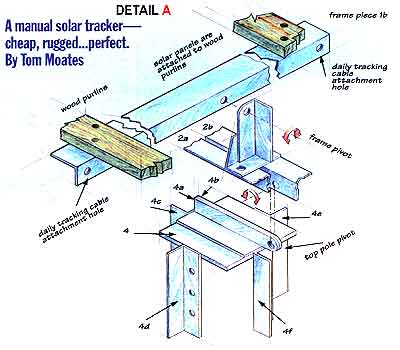

A manual solar tracker-cheap, rugged . . . perfect.
The first winter on our homestead was rough. The snows were the worst anyone could remember in these Blue Ridge Mountains of Virginia, and aside from the house being completely incomplete and without running water, the solar panels-our source of electricity-were , sitting on the ground, leaned up against a camper shell to do their collecting. When spring finally sprang permanently, mounting our photovoltaic array was a priority we could no longer put off, even though our funds were seriously depleted. No longer could we afford weeds climbing in front of the modules, tree shadows, and dog traffic-all debilitating our current generation as water pumping and clothes washing became a regular in-homestead event.
The treetops around the homestead remained bright with sunlight for awhile after the sun dropped behind the higher surrounding ridge for the evening, so it was obvious a tall mounting pole would help harness more power each day. Also, we explored the benefits of panel mounts that track the sun. The pros say that in the winter, a tracking array in an unobstructed spot produces at least 15 percent more power than a stationary model; in summer, that figure jumps from 40 to 60 percent. This is a substantial gain, but we simply couldn't afford a self-tracking mount-which would have been more than $1,000 for one large enough to house all our panels.
Carol, my wife, brought to my attention the key to solving the dilemma. "With the animals and gardens," she said, "someone is usually here-couldn't we turn them?"
Of course! A manual tracker-cheap, rugged.. .perfect. For pennies compared to the factory built self-tracker, I designed and built a manual tracker large enough to handle our current 18 panels as well as 12 additional panels we hope to add one day, and used material we already had on hand.
The design is simple. The sun makes its journey across the sky in an orbital path, so the solar array needs to track in that same way. Also, the sun tracks much higher in the sky during the long days of summer (figure the angle by subtracting 15 degrees from your latitude) than in the shorter winter days (latitude plus 15 degrees). To maximize full frontal angle to the sun, the array also needed to tilt up and down to allow for this seasonal change.
Adjust the size of the tracker in this article to fit your needs. The total area of our panels is about 60 square feet, but an upgrade to 120 square feet was allowed for, so the overall size of the tracker is 10' x 12' though it isn't all used yet.
The basic skeleton of the apparatus is six long pieces of angle iron drilled and bolted together. A pivot cap is needed for the top of the pole where the whole thing hinges for the up and down winter/summer adjustment. Three small angle pivots are needed for the daily orbital swinging of the array. Four rough oak 1 x 4's act similar to roof purlins and allow for the mounting of the panels themselves. Finally, a hand winch is attached to the base of the pole, and cables are run to allow the whole thing to turn on its hinge points when the winch is cranked and the top of the pole is guyed off to the ground for stability in wind.
A straight 30-foot-long locust pole from a tree felled while clearing for the garden was our choice to hold the array. Choose a pole length that optimizes your sunlight potential-either a wooden or metal pole will suffice.
A few bags of concrete are needed to set the pole in the ground; you need enough to fill two-thirds of the hole around the pole with concrete.
Aside from the photovoltaic panels themselves, the most expensive part of the array is likely to be the angle iron. Most areas have scrap yards, and it's hard to say how much you might have to pay for the pieces. Purchased brand new, the galvanized angle iron for this project would cost about $100, but there are bound to be sources for scrap in the immediate vicinity.
Lag bolts, bolts, cable, and even the winch (refer to materials list on page 88 for numbers of each) should be available from most building or farm supplies. A catalog company called Northern Hydraulics (2800 S. Cross Dr. West, Burnsville, MN 55306, 800-222-5381) also has such supplies at a reasonable cost.
Much of the initial work involved in this project is drilling bolt holes through the angle iron pieces. A drill press and sharp bit helps speed up this task, but it can be done with an electric hand drill. For each hole, take your measurements, make a small indentation with a center punch at the center point of the hole for the bit to follow, and always apply light cutting oil to the bit and metal while drilling (refer to the diagram depicting each piece with size and positions of holes for layout). It helps to label each piece of angle you have acquired with its respective diagram number for reference during layout and assembly. Also, a metal cutting bandsaw, a metal chopsaw, a cutting torch, or even a grinder can be used to cut the angle iron.
The top pole pivot and the three identical frame pivots require a bit of welding. Make sure all welds are done by an experienced welder-a faulty weld could snap in a wind with devastating results. The top pivot is a piece of 1/4" plate metal (4) cut slightly larger than the top of your mounting pole, with four 12" legs (4c-4f) welded across from one another that fit over the top of the pole. Lag bolts screw through the holes into the pole to hold the unit-and pieces 4a and 4b are welded back to back on the other side of 4c. The 2 1/2" with the clips cut out and bolt holes aligned together stick out beyond the edge of 4c to allow for the hinging action of the entire array.
The frame pivots (5a, b, and c) are two short pieces of angle with some edges trimmed, bolt holes drilled, and welded into a "T". The diagrams for the pieces show how they should look when finished.
For simplicity, we fitted and mounted the top pole pivot onto the pole before raising it. This allowed for an easy work space but the overhang of parts 4a and 4b must be oriented southward when the pole is permanently set-which was difficult to maintain while setting the pole.
With post hole diggers we dug a 6' hole and then, using a gin pole, we hoisted the massive locust post into the air and sank it into the hole. When setting your pole, use a 4' level to maintain plumb while filling in around the base with concrete. Then tamp rocks and dirt into the hole, keeping true while filling it the rest of the way.
Once the pole is up, erect scaffolding along side of it to provide a safe work space for the higher-altitude assembly.
The first piece to go up is the spine. It can be preassembled on the ground; set 2a and 2b back to back and bolt frame pivots 5a, 5b, and 5c in their positions on the flat side of the spine. Use lock washers on the bolts and tighten snugly. Notice that when the frame pivots are installed, spine pieces 2a and 2b, though oriented back to back, do not touch. This opening allows for the top pole pivot (piece 4) to fit between 2a and 2b with a single bolt passing through all four pieces (4a, 4b, 2a, and 2b), creating the main hinge that holds the entire array. Pull the assembled spine up the scaffolding, and bolt it in place to the top pole pivot, making sure that the bolt hole on the spine for the angle brace is facing the downward side.
Bolt the brace (piece 3) to its hole in the spine, and then lag bolt it back to the pole in a position that allows for easiest access for installation of the remaining pieces from your scaffolding. Notice the brace has multiple holes on the end towards the pole; this allows for the adjustment of the array for higher summer sun tracking or lower winter sun tracking.
Next carry up and bolt the frame pieces in place (1a, 1b, and 1c). Take care to mount 1b to the center frame pivot (5b); this frame piece has holes drilled at either end for attaching the turning cables. Snug these bolts down, but not so excruciatingly tight that they won't allow the frame to pivot. Adding a bit of grease between the frame and pivot will help the process as well.
Using 3/8" carriage bolts with lock washers, bolt the 1 x 4 oak purlins onto the frame. It may be easiest to C-clamp the boards to the frame pieces in place, and then drill by running the bit through the holes already in the angle pieces, and bolt them from the scaffolding. Note that you may wish to configure the purlins slightly differently than we have to accommodate other kinds of panels. The important things to keep in mind are that the array should be equally balanced in weight on either side, and that the weather tight electrical boxes on the back sides of the panels should be kept to the side of the purlins for accessibility. You also may want to treat the purlins with a wood preservative before sending them up.
Using wood is nice because it allows for a certain amount of flexibility in the rig. Different types of panels are easily mounted. Some of our panels, for instance, have aluminum frames with predrilled holes, which we attached simply by drilling through the oak and fastened with carriage bolts. The other panels only have small plastic frames that were mounted with screws and neoprene washers, pinching the edges of these frames in several spots.
With the wood in place, mount and wire your panels. Next, attach an end of a piece of 1/8" cable to a hole at an end of 1b using a cable eye and two clamps. Mount your hand winch to a comfortable spot at the base of the pole. With the array turned fully to the side where the cable connection is up in the air, cut the cable at the winch and connect it properly to the winch spool.
Now connect another cable to the hole in the other end of lb in the same fashion as above, and crank the winch turning the array fully to the other direction. Place a lag bolt into the pole above the winch at about shoulder height, cut the cable dangling from the side of lb now high in the air, and put a loop in the end so that it may slip over the lag bolt. When the array is fully turned with the winch, the cable loop in the lag bolt will keep the array snug so that even strong winds won't swing it around.
Place lag bolts at several other positions down the pole so that the loop on the loose cable may be changed from one to another, effectively locking the winch on these positions throughout the day. Be careful not to overtighten the rig with the winch-just a little tension works fine.
Back at the top of the pole, attach at least three guy wires to the top pole pivot with two clamps each. Run these to stabs driven deeply into the ground (at least three feet), and put turn buckles into the guy wires near the ground so they may be tightened occasionally.
Finally you must protect the rig against lightning strikes. Drive your 8' copper or galvanized ground rod into the ground at the base of the pole. Bolt a large copper wire (I used 3/0 copper and I wouldn't suggest less than 1/0 copper) to the spine (2a), and run this down and attach the other end to the ground rod. This is a separate ground from your system ground and should take direct hits right into the ground away from the system. We also have a system ground connected to the negative side at the battery, have fused disconnects coming from the panels on the positive leg, and have a low voltage lightning arrester before the fuse. This is an adequate ground. Some installations run multiple ground rods from the array frame in every direction, but this strikes me (sorry) as a bit of overkill. The rod's ultimate purpose is to discharge an occasional and unwanted direct hit, not to provide the ultimate encouragement and opportunity for every passing thunderhead by saying, "Hey, look at this great discharge spot over here!"
If you're going to be away for the day, just leave the array pointed south to maximize the stationary collection of the sun. If you are expecting high winds, take time and inspect the guy wires for tightness, and snug the array, making it as parallel to wind currents as you can manage, thus reducing stress on the panels.
The project took several days to fabricate and assemble, but for a minimal cost we have maximized our photovoltaic collection and built a tracker that has operated flawlessly for more than six months and survived several gusty wind storms without incident-testimony that cheap and simple technology still can be the most appropriate alternative for my good old average homestead, and maybe yours, too.
|
Left and Right: Assembling the top plate and its support beams. |
 To clear the tree shade, we mounted the panels atop a 30- foot pole. The panels are then adjusted with a winch mounted at the base. |
|
|
|
|
|
|
|
|
|